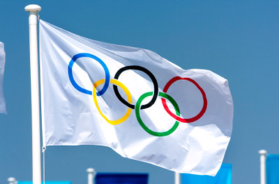
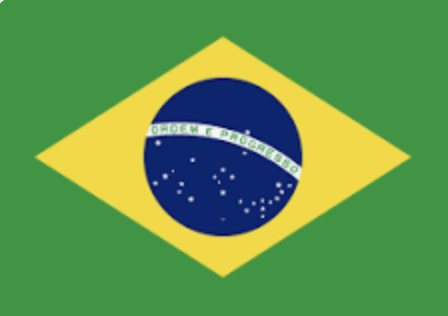

|
|
Olympic Games |
|  |
|
|
About Olympic GamesThe Olympic Games from the Greek Ολυμπιακοί αγώνες are the largest international complex sports competitions that are held every four years under the auspices of the International Olympic Committee. The medal won at the Olympic Games is considered one of the highest achievements in sports. |
|
The tradition of hosting the Olympic Games, which existed in ancient Greece, originated as part of a religious cult. Games have been held since 776 BC. e. to 393 AD BC, a total of 293 Olympiads were held in Olympia, which was considered a sacred place among the Greeks. The name of the games also originated from Olympia. |
|
A few days after the Olympic Games, the Paralympic Games for people with disabilities are hosted at the same sports facilities. |
| OG Number | Year | 1st Place | 2nd Place | 3rd Place |
| I | 1896 | USA | Kingdom of Greece | German Empire |
| II | 1900 | France | USA | United Kingdom |
| III | 1904 | USA | German Empire | Куба |
| IV | 1908 | United Kingdom | USA | Sweden |
| V | 1912 | USA | Sweden | United Kingdom |
| First World War | ||||
| VII | 1920 | USA | Sweden | United Kingdom |
| VIII | 1924 | США | Finland | France |
| IX | 1928 | USA | Allmar Republic | Finland |
| Х | 1932 | США | Kingdom of Italy | France |
| XI | 1936 | Hitler's Germany | США | Kingdom of Hungary |
| Second World War | ||||
| Second World War | ||||
| XIV | 1948 | USA | Sweden | France |
| XV | 1952 | USA | USSR | Hungary |
| XVI | 1956 | USSR | США | Australia |
| XVII | 1960 | USSR | USA | Italy |
| XVIII | 1964 | USA | USSR | Japan |
| XIX | 1968 | USA | USSR | Japan |
| XX | 1972 | USSR | USA | ГДР |
| XXI | 1976 | СССР | East Germany | USA |
| XXII | 1980 | USSR | East Germany | Болгария |
| XXIII | 1984 | USA | Romania | West Germany |
| XXIV | 1988 | USSR | East Germany | USA |
| XXV | 1992 | United team | USA | Germany |
| XXVI | 1996 | USA | Russia | Germany |
| XXVII | 2000 | USA | Russia | China |
| XXVIII | 2004 | USA | China | Russia |
| XXIX | 2008 | China | USA | Russia |
| XXX | 2012 | USA | China | United Kingdom |
| XXXI | 2016 | USA | United Kingdom | China |
| XXXII | 2020 | Postponed to 2021 because of Covid-19 | ||
| XXXIII | 2024 | |||
| XXXIV | 2028 | |||
| OG Number | Year | 1st Place | 2nd Place | 3rd Place |
| I | 1924 | Norway | Finland | Austria |
| II | 1928 | Norway | USA | Sweden |
| III | 1932 | USA | Norway | Sweden |
| IV | 1936 | Norway | Hitler's Germany | Sweden |
| - | Second World War | |||
| - | Second World War | |||
| V | 1948 | Norway | Sweden | Switzerland |
| VI | 1952 | Norway | США | Finland |
| VII | 1956 | USSR | Austria | Finland |
| VIII | 1960 | USSR | West Germany | USA |
| IX | 1964 | USSR | Austria | Norway |
| X | 1968 | Norway | СССР | Finland |
| XI | 1972 | USSR | East Germany | USA |
| XII | 1976 | USSR | East Germany | USA |
| XIII | 1980 | USSR | East Germany | USA |
| XIV | 1984 | East Germany | USSR | USA |
| XV | 1988 | USSR | East Germany | Switzerland |
| XVI | 1992 | Germany | United Team | Norway |
| XVII | 1994 | Russia | Norway | Germany |
| XVIII | 1998 | Germany | Norway | Russia |
| XIX | 2002 | Norway | Germany | USA |
| XX | 2006 | Germany | USA | Austria |
| XXI | 2010 | Canada | Germany | USA |
| XXII | 2014 | Russia | Norway | Canada |
| XXIII | 2018 | Norway | Germany | Canada |
| XXIV | 2022 | |||
| XXV | 2026 | |||
| OG Number | Year | The Opening Ceremony Date | The Closing Ceremony Date | Host-city | Host-country | Number of Countries | Number of sports |
| I | 1896 | 6 July | 24 July | Athens |
 Kingdom of Greece
Kingdom of Greece
|
14 | 9 |
| II | 1900 | 28 July | 14 August | Paris | France | 24 | 20 |
| III | 1904 | 1 July | 23 July | Saint-Loius |
 USA
USA
|
12 | 18 |
| IV | 1908 | 17 July | 11 August | London | United Kingdom | 22 | 22 |
| V | 1912 | 5 June | 27 July | Stockholm |
 Sweden
Sweden
|
28 | 14 |
| First World War | |||||||
| VII | 1920 | 14 August | 29 August | Antwerp | Belgium | 29 | 22 |
| VIII | 1924 | 4 July | 27 Juuly | Paris | France | 44 | 17 |
| IX | 1928 | 26 July | 12 August | Amsterdam |
 Netherlands
Netherlands
|
46 | 14 |
| Х | 1932 | 30 June | 14 July | Los-Angeles |
USA
|
37 | 14 |
| XI | 1936 | 1 August | 16 August | Berlin | Nazi Germany | 51 | 19 |
| Second World War | |||||||
| Second World War | |||||||
| XIV | 1948 | 28 July | 8 August | London | United Kingdom | 59 | 17 |
| XV | 1952 | 14 July | 30 July | Helsinki |
 Finland
Finland
|
69 | 17 |
| XVI | 1956 | 10 June | 24 June | Melbourne |
 Australia
Australia
|
67 | 17 |
| XVII | 1960 | 15 June | 1 July | Rome | Italy | 83 | 17 |
| XVIII | 1964 | 1 July | 28 July | Tokyo |
 Japan
Japan
|
93 | 19 |
| XIX | 1968 | 12 July | 27 July | Mexico City |
 Mexico
Mexico
|
112 | 20 |
| XX | 1972 | 26 June | 11 July | Munich | West Germany | 121 | 23 |
| XXI | 1976 | 17 July | 1 August | Montreal |
 Canada
Canada
|
92 | 21 |
| XXII | 1980 | 22 July | 13 August | Moscow |
 СССР
СССР
|
80 | 21 |
| XXIII | 1984 | 28 July | 16 August | Los-Angeles |
USA
|
140 | 23 |
| XXIV | 1988 | 10 Hune | 2 July | Seoul |
 Rebulic of Korea
Rebulic of Korea
|
159 | 27 |
| XXV | 1992 | 20 July | 5 August | Barcelona |
 Spain
Spain
|
169 | 32 |
| XXVI | 1996 | 24 July | 10 August | Atlanta |
USA
|
197 | 26 |
| XXVII | 2000 | 25 June | 18 July | Sydney |
Australia
|
199 | 28 |
| XXVIII | 2004 | 3 August | 19 August | Athens |
Greece
|
201 | 28 |
| XXIX | 2008 | 8 August | 24 August | Beijing | China | 204 | 28 |
| XXX | 2012 | 25 July | 15 August | Лондон | Великобретания | 204 | 26 |
| XXXI | 2016 | 15 June | 30 June | Rio-de-Janeiro |  Brazil | 207 | 28 |
| XXXII | 2020 | Перенесено на 2021 год из-за Covid-19 | |||||
| XXXIII | 2024 | 22 June | 14 July | Paris | France | ||
| XXXIV | 2028 | 21 July | 18 August | Los-Angeles |
USA
|
||